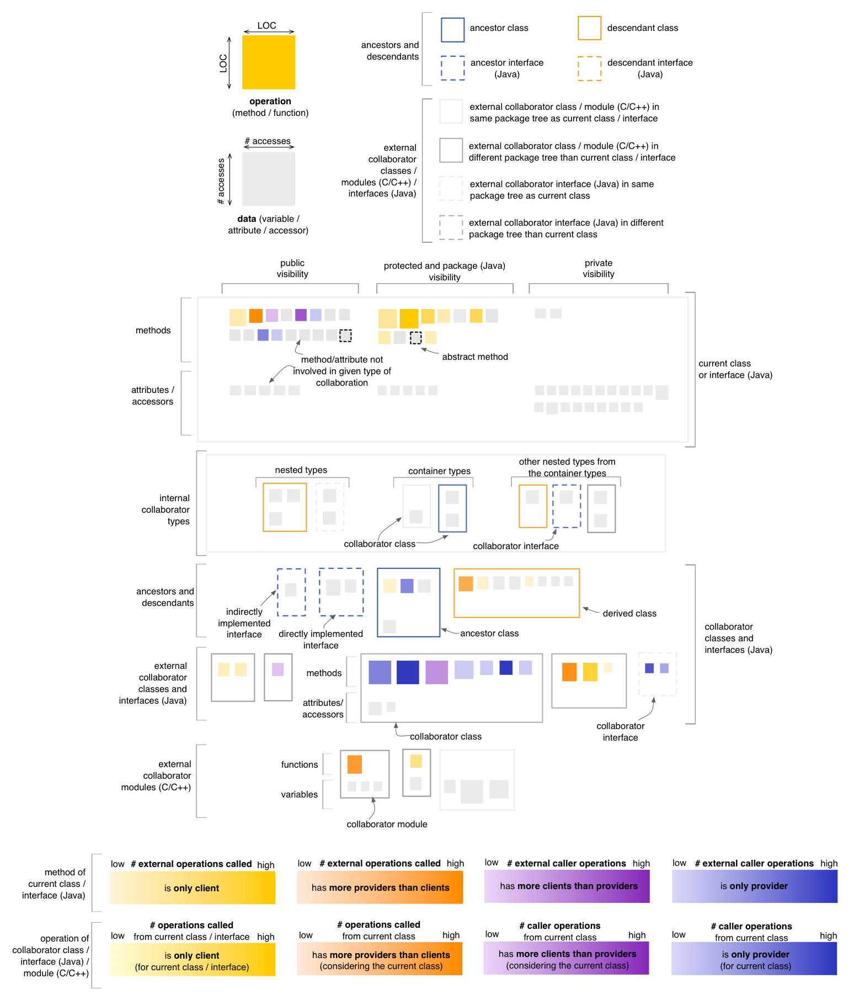
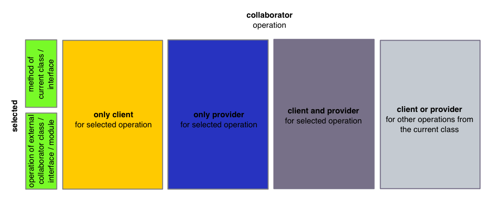

Class Map - Coupling Perspective
The Coupling Perspective of the Class Map
provides insight into the coupling that exists between the operations
of the current class or interface (Java) and the operations of its
collaborator classes, interfaces (Java) and modules (C and C++). In the
default state,
the Coupling Perspective will render operations based on
their predominant nature from the viewpoint of operation calls, using
four color gradients:
- if an operation only calls other operations but is not itself called (i.e. it is a
pure client), it is rendered in a shade of yellow
- if an operation both calls and is called by
other operations, it will be rendered in
a color that depends on which aspect is predominant (i.e. mostly client
shown in a shade of orange, or mostly provider shown in a shade
of magenta)
- if an operation is called by
other operations but does not itself call other operations (i.e. it is a
pure provider), it is shown in a shade of blue

Entity selection
The user may select an operation or a data in the map, in
which case the coloring of the map changes to reflect the coupling from
the point of view of the selcted entity. The selected entity is colored
in green (with no borders). All other operations are colored using
the four colors described below, based on their relation to
the selected entity. In case of the Coupling
Perspective, this relation is defined in terms of external operation
calls. Note that the last color shown below is actually reserved for
operations with no relation to the selected entity but with relations
to other methods from the current class or interface. This shade of
gray is slightly darker than the one used for data nodes and operations
with no relation to the methods of the current class or interface.

Other quality perspectives
Cohesion, Complexity, Design Flaws, Encapsulation, Inheritance
Metrics used
DIT (indirectly), LOC